A function to generate m-surroundings
m.surround.RdThis function obtains the m-surroundings by selecting the *m-1* nearest neighbors of each observation, allowing for a degree of overlap of *r*.
Usage
m.surround(x, m, r = 1, distance = "Euclidean", control = list())Arguments
- x
input sf object with points/multipolygons geometry or matrix of spatial coordinates
- m
dimension of m-surrounding
- r
maximum overlapping between any two m-surroundings.
- distance
character. For Cartesian coordinates only: one of Euclidean, Hausdorff or Frechet; for geodetic coordinates, Great Circle distances are computed. (see
sf::st_distance()). Default = "Euclidean".- control
List of additional control arguments.
Value
A list of class list and m_surr containing the following components:
ms | a matrix. Each row is a m-surrounding. |
R | total number of observations. |
rowexcl | index of rows excluded. |
mdtms | distances between the observations of each m-surrounding. |
N | total number of symbolized observations. |
m | length of the m-surroundings. |
r | overlapping degree. |
initobs | element to start the generation of m-surroundings. |
distance | type of distance. |
m | length of the m-surroundings. |
x | the input "x" as sf-object. |
Control arguments
initobs | Initial observation to begin the m-surrounding process. Default = 1. |
dtmaxabs | Threshold of distance (in absolute
value) to prune the m-surroundings. Any m-surrounding
exceeding the threshold is excluded.
If dtmaxabs = 0 there is no exclusion of m-surroundings.
Default = 0. |
dtmaxpc | Threshold of distance (as a percentage
of the maximum distance between observations) to prune the m-surroundings. Any m-surrounding
exceeding the threshold is excluded.
Example if dtmaxpc = 0.1 the m-surrounding exceeding
the 10
If dtmaxpc = 0 there is no exclusion of m-surroundings.
Default = 0. |
dtmaxknn | Eliminate m-surroundings where some
of the elements are not among the closest
knn (k-nearest-neighbors).
Example, if dtmaxknn = 4 exclude m-surroundings
where some of the elements are not between the 4 closest.
Default dtmaxknn = 0 (no exclusion) |
References
Ruiz M, López FA, A Páez. (2010). Testing for spatial association of qualitative data using symbolic dynamics. Journal of Geographical Systems. 12 (3) 281-309
Author
| Fernando López | fernando.lopez@upct.es |
| Román Mínguez | roman.minguez@uclm.es |
| Antonio Páez | paezha@gmail.com |
| Manuel Ruiz | manuel.ruiz@upct.es |
Examples
# Example 1: Obtain m-surroundings with degree of overlapping r
N <- 100
cx <- runif(N)
cy <- runif(N)
x <- cbind(cx,cy)
m <- 3
r <- 1
msurr_points <- m.surround(x = x, m = m, r = r)
plot(msurr_points, type = 1)
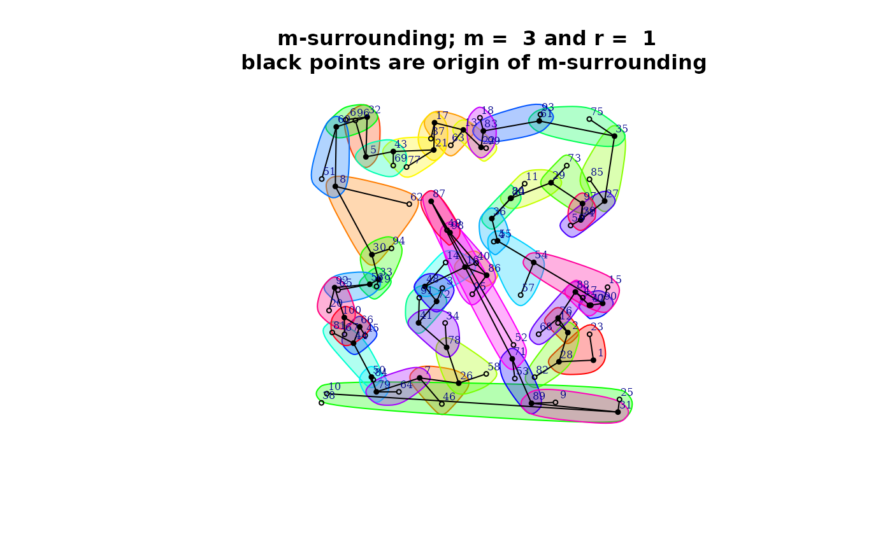
plot(msurr_points, type = 2)
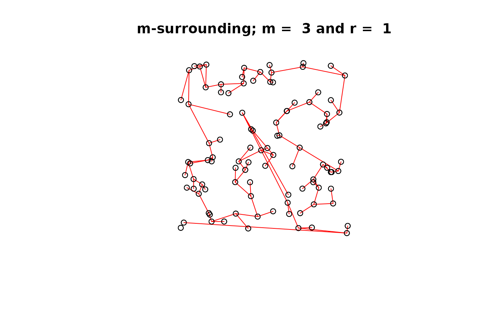
summary(msurr_points)
#>
#> Characteristics of m-surrounding:
#>
#> Number of m-surrounding (R): 49
#> Length of m-surrounding (m): 3
#> Number no-symbolized observations: 1
#>
#> List of no-symbolized observations:
#> 38
#>
#> List of the degree overlaping:
#> There are 2 m-surrounding that have intersection with 1 m-surrounding
#> There are 47 m-surrounding that have intersection with 2 m-surrounding
#> Mean degree of overlaping: 1.9592
msurr_points <- m.surround(x = x, m = m, r = r,
control = list(dtmaxpc = 0.1))
#>
#> Threshold distance: 0.1316995
#> Number of m-surroundings excluded for exceeding
#> the threshold distance: 17
#>
#> Index of spatial observations excluded: 5 30 42 3 9 11 13 17 20 25 27 31 34 39 41 44 45
plot(msurr_points, type = 1)
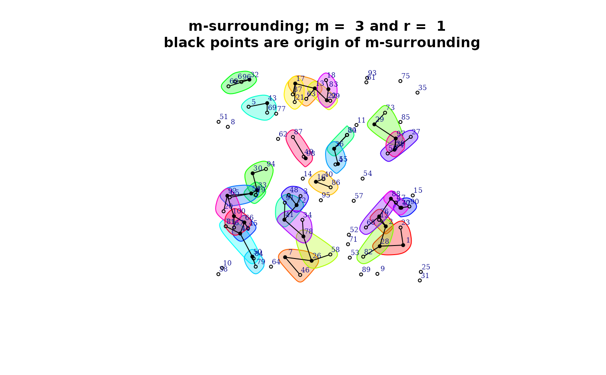
plot(msurr_points, type = 2)
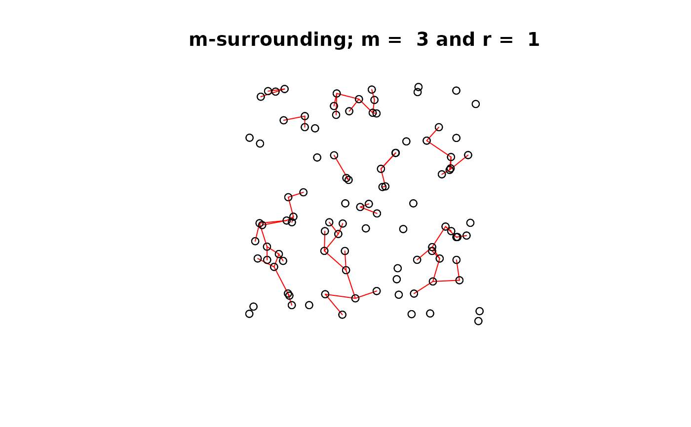
summary(msurr_points)
#>
#> Characteristics of m-surrounding:
#>
#> Number of m-surrounding (R): 32
#> Length of m-surrounding (m): 3
#> Number no-symbolized observations: 26
#>
#> List of no-symbolized observations:
#> 8 9 10 11 14 15 25 31 35 38 51 52 53 54 57 61 62 64 71 75 77 85 89 93 95 96
#>
#> List of the degree overlaping:
#> There are 4 m-surrounding that have intersection with 0 m-surrounding
#> There are 12 m-surrounding that have intersection with 1 m-surrounding
#> There are 16 m-surrounding that have intersection with 2 m-surrounding
#> Mean degree of overlaping: 1.375
msurr_points <- m.surround(x = x, m = m, r = r,
control = list(dtmaxknn = 20))
plot(msurr_points, type = 1)
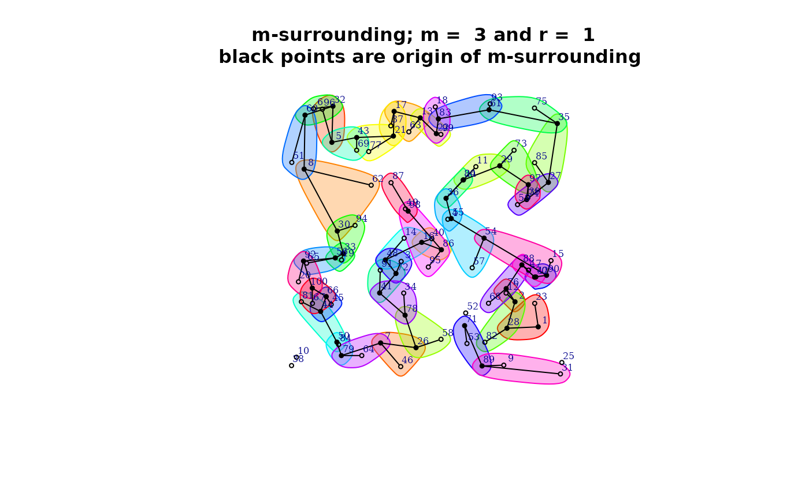
plot(msurr_points, type = 2)
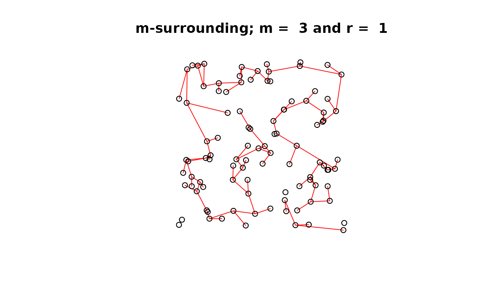
summary(msurr_points)
#>
#> Characteristics of m-surrounding:
#>
#> Number of m-surrounding (R): 47
#> Length of m-surrounding (m): 3
#> Number no-symbolized observations: 4
#>
#> List of no-symbolized observations:
#> 10 25 38 52
#>
#> List of the degree overlaping:
#> There are 4 m-surrounding that have intersection with 1 m-surrounding
#> There are 43 m-surrounding that have intersection with 2 m-surrounding
#> Mean degree of overlaping: 1.9149
# Example 2:
# \donttest{
data("FastFood.sf")
m <- 3
r <- 1
msurr_points <- m.surround(x = FastFood.sf, m = m, r = r,
distance = "Euclidean",
control = list(dtmaxpc = .001))
#> Warning: bounding box has potentially an invalid value range for longlat data
#>
#> Threshold distance: 105.4512
#> Number of m-surroundings excluded for exceeding
#> the threshold distance: 424
#>
#> Index of spatial observations excluded: 2 3 6 7 8 10 11 12 13 14 15 16 17 19 20 21 22 23 24 26 27 28 33 34 35 36 37 38 39 42 44 45 49 50 51 52 53 54 55 56 57 58 59 60 61 64 65 66 68 69 70 71 72 74 76 79 80 81 82 83 84 85 86 87 89 92 95 96 97 98 99 100 101 102 104 105 106 108 109 112 113 114 115 116 117 118 119 120 122 123 124 125 126 127 129 130 131 132 133 135 136 137 138 139 140 141 142 143 144 145 146 147 148 149 150 151 152 153 154 155 156 157 158 159 160 163 164 165 167 168 171 173 174 176 178 180 181 182 183 184 186 188 189 190 191 192 193 194 196 198 199 200 201 202 203 205 207 209 212 214 216 217 218 219 220 221 222 223 224 225 226 227 228 229 230 233 234 235 237 238 239 240 241 243 244 245 246 248 249 250 252 253 254 255 256 258 259 260 261 262 263 264 265 267 268 269 270 271 272 274 275 276 278 279 280 281 282 283 285 287 290 291 292 293 295 296 297 298 300 301 302 303 304 306 307 310 311 312 314 316 317 318 319 321 323 324 326 327 328 329 330 331 332 333 334 335 336 337 339 340 341 342 343 344 345 348 349 350 351 352 353 354 356 357 358 359 360 363 365 366 368 369 370 373 374 377 378 379 381 382 383 384 385 388 389 390 391 392 394 395 396 397 398 399 400 401 402 403 404 405 406 407 410 411 412 414 415 416 418 419 420 421 422 423 424 426 427 428 429 430 431 432 433 434 435 437 438 4 9 18 25 29 31 32 40 43 46 47 48 63 67 73 75 77 78 88 90 91 93 94 103 107 110 111 121 128 134 161 162 166 169 170 172 175 179 185 187 197 204 206 208 211 213 215 231 236 247 251 257 266 273 277 284 286 288 289 294 299 305 308 309 313 322 338 346 347 355 361 362 364 367 371 372 375 376 380 386 387 408 409 413 417 425 436
plot(msurr_points, type = 1)
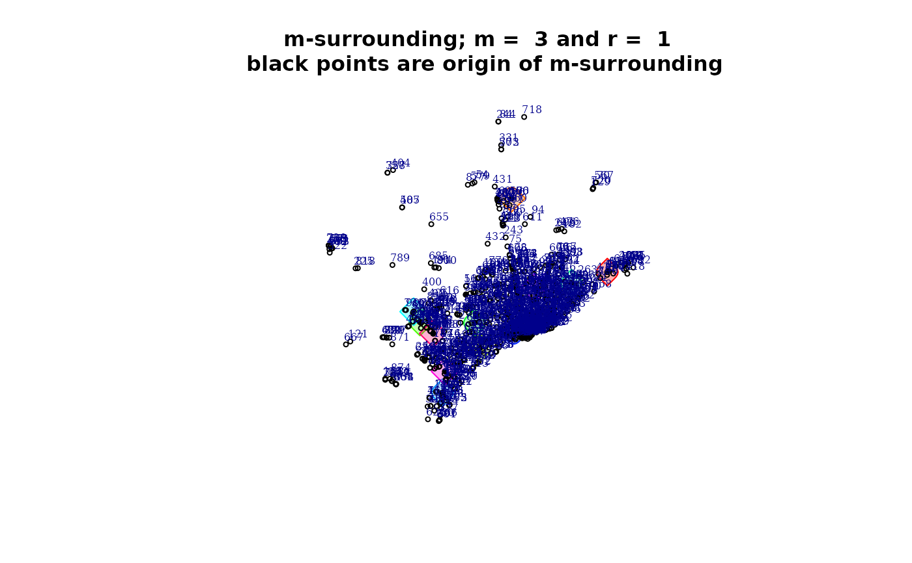
plot(msurr_points, type = 2)
#> Warning: bounding box has potentially an invalid value range for longlat data
print(msurr_points)
#> [,1] [,2] [,3]
#> [1,] 1 180 675
#> [2,] 7 580 196
#> [3,] 65 520 793
#> [4,] 87 234 136
#> [5,] 139 284 343
#> [6,] 366 347 217
#> [7,] 390 17 742
#> [8,] 422 9 662
#> [9,] 467 199 271
#> [10,] 488 133 657
#> [11,] 637 515 103
#> [12,] 654 832 387
#> [13,] 664 175 852
#> [14,] 791 650 81
summary(msurr_points)
#>
#> Characteristics of m-surrounding:
#>
#> Number of m-surrounding (R): 14
#> Length of m-surrounding (m): 3
#> Number no-symbolized observations: 835
#>
#> List of no-symbolized observations:
#> 2 3 4 5 6 8 10 11 12 13 14 15 16 18 19 20 21 22 23 24 25 26 27 28 29 30 31 32 33 34 35 36 37 38 39 40 41 42 43 44 45 46 47 48 49 50 51 52 53 54 55 56 57 58 59 60 61 62 63 64 66 67 68 69 70 71 72 73 74 75 76 77 78 79 80 82 83 84 85 86 88 89 90 91 92 93 94 95 96 97 98 99 100 101 102 104 105 106 107 108 109 110 111 112 113 114 115 116 117 118 119 120 121 122 123 124 125 126 127 128 129 130 131 132 134 135 137 138 140 141 142 143 144 145 146 147 148 149 150 151 152 153 154 155 156 157 158 159 160 161 162 163 164 165 166 167 168 169 170 171 172 173 174 176 177 178 179 181 182 183 184 185 186 187 188 189 190 191 192 193 194 195 197 198 200 201 202 203 204 205 206 207 208 209 210 211 212 213 214 215 216 218 219 220 221 222 223 224 225 226 227 228 229 230 231 232 233 235 236 237 238 239 240 241 242 243 244 245 246 247 248 249 250 251 252 253 254 255 256 257 258 259 260 261 262 263 264 265 266 267 268 269 270 272 273 274 275 276 277 278 279 280 281 282 283 285 286 287 288 289 290 291 292 293 294 295 296 297 298 299 300 301 302 303 304 305 306 307 308 309 310 311 312 313 314 315 316 317 318 319 320 321 322 323 324 325 326 327 328 329 330 331 332 333 334 335 336 337 338 339 340 341 342 344 345 346 348 349 350 351 352 353 354 355 356 357 358 359 360 361 362 363 364 365 367 368 369 370 371 372 373 374 375 376 377 378 379 380 381 382 383 384 385 386 388 389 391 392 393 394 395 396 397 398 399 400 401 402 403 404 405 406 407 408 409 410 411 412 413 414 415 416 417 418 419 420 421 423 424 425 426 427 428 429 430 431 432 433 434 435 436 437 438 439 440 441 442 443 444 445 446 447 448 449 450 451 452 453 454 455 456 457 458 459 460 461 462 463 464 465 466 468 469 470 471 472 473 474 475 476 477 478 479 480 481 482 483 484 485 486 487 489 490 491 492 493 494 495 496 497 498 499 500 501 502 503 504 505 506 507 508 509 510 511 512 513 514 516 517 518 519 521 522 523 524 525 526 527 528 529 530 531 532 533 534 535 536 537 538 539 540 541 542 543 544 545 546 547 548 549 550 551 552 553 554 555 556 557 558 559 560 561 562 563 564 565 566 567 568 569 570 571 572 573 574 575 576 577 578 579 581 582 583 584 585 586 587 588 589 590 591 592 593 594 595 596 597 598 599 600 601 602 603 604 605 606 607 608 609 610 611 612 613 614 615 616 617 618 619 620 621 622 623 624 625 626 627 628 629 630 631 632 633 634 635 636 638 639 640 641 642 643 644 645 646 647 648 649 651 652 653 655 656 658 659 660 661 663 665 666 667 668 669 670 671 672 673 674 676 677 678 679 680 681 682 683 684 685 686 687 688 689 690 691 692 693 694 695 696 697 698 699 700 701 702 703 704 705 706 707 708 709 710 711 712 713 714 715 716 717 718 719 720 721 722 723 724 725 726 727 728 729 730 731 732 733 734 735 736 737 738 739 740 741 743 744 745 746 747 748 749 750 751 752 753 754 755 756 757 758 759 760 761 762 763 764 765 766 767 768 769 770 771 772 773 774 775 776 777 778 779 780 781 782 783 784 785 786 787 788 789 790 792 794 795 796 797 798 799 800 801 802 803 804 805 806 807 808 809 810 811 812 813 814 815 816 817 818 819 820 821 822 823 824 825 826 827 828 829 830 831 833 834 835 836 837 838 839 840 841 842 843 844 845 846 847 848 849 850 851 853 854 855 856 857 858 859 860 861 862 863 864 865 866 867 868 869 870 871 872 873 874 875 876 877
#>
#> List of the degree overlaping:
#> There are 14 m-surrounding that have intersection with 0 m-surrounding
#> Mean degree of overlaping: 0
msurr_points <- m.surround(x = FastFood.sf, m = m, r = r,
distance = "Euclidean",
control = list(dtmaxknn = 20))
#> Warning: bounding box has potentially an invalid value range for longlat data
plot(msurr_points, type = 1)
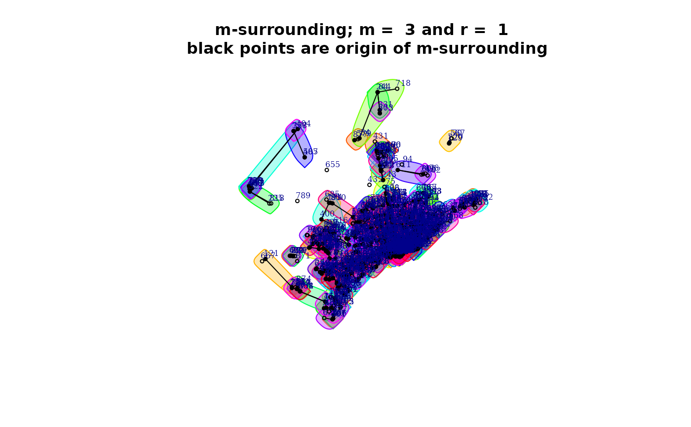
plot(msurr_points, type = 2)
#> Warning: bounding box has potentially an invalid value range for longlat data
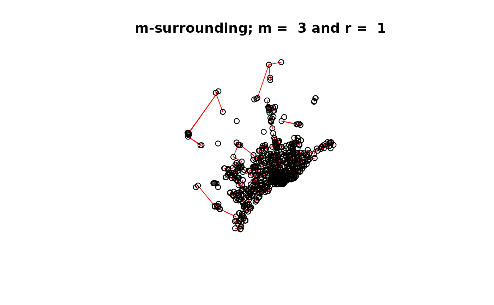
summary(msurr_points)
#>
#> Characteristics of m-surrounding:
#>
#> Number of m-surrounding (R): 409
#> Length of m-surrounding (m): 3
#> Number no-symbolized observations: 34
#>
#> List of no-symbolized observations:
#> 21 30 56 94 99 115 119 211 285 312 345 418 432 494 523 525 567 618 646 655 660 663 736 776 789 796 798 799 809 815 827 862 871 876
#>
#> List of the degree overlaping:
#> There are 2 m-surrounding that have intersection with 0 m-surrounding
#> There are 46 m-surrounding that have intersection with 1 m-surrounding
#> There are 361 m-surrounding that have intersection with 2 m-surrounding
#> Mean degree of overlaping: 1.8778
# }
# Example 3: With isolated areas
data(provinces_spain)
sf::sf_use_s2(FALSE)
plot(sf::st_geometry(provinces_spain))
m <- 3
r <- 1
msurr_points <- m.surround(x = provinces_spain, m = m, r = r,
distance = "Euclidean",
control = list(dtmaxknn = 8))
plot(msurr_points, type = 1)
#> Warning: st_centroid assumes attributes are constant over geometries of x
#> Warning: st_centroid does not give correct centroids for longitude/latitude data
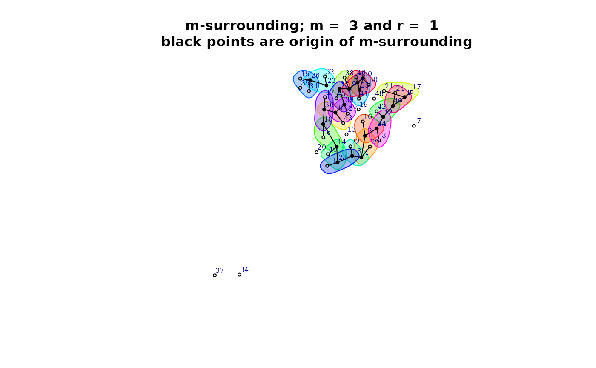
plot(msurr_points, type = 2)
#> Warning: st_centroid assumes attributes are constant over geometries of x
#> Warning: st_centroid does not give correct centroids for longitude/latitude data
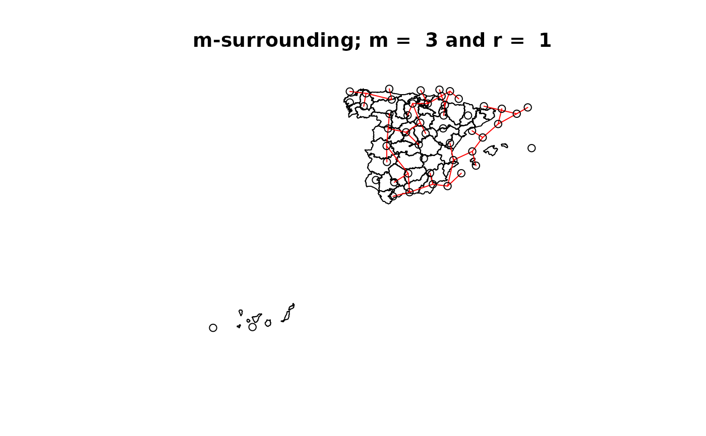
# Example 4: Examples with multipolygons
fname <- system.file("shape/nc.shp", package="sf")
nc <- sf::st_read(fname)
#> Reading layer `nc' from data source
#> `/home/runner/work/_temp/Library/sf/shape/nc.shp' using driver `ESRI Shapefile'
#> Simple feature collection with 100 features and 14 fields
#> Geometry type: MULTIPOLYGON
#> Dimension: XY
#> Bounding box: xmin: -84.32385 ymin: 33.88199 xmax: -75.45698 ymax: 36.58965
#> Geodetic CRS: NAD27
plot(sf::st_geometry(nc))
 m <- 3
r <- 1
msurr_polygonsf <- m.surround(x = nc, m = m, r = r,
distance = "Great Circle",
control=list(dtmaxpc = 0.20))
#>
#> Threshold distance: 150383.5
#> Number of m-surroundings excluded for exceeding
#> the threshold distance: 2
#>
#> Index of spatial observations excluded: 42 28
plot(msurr_polygonsf, type = 1)
#> Warning: st_centroid assumes attributes are constant over geometries of x
#> Warning: st_centroid does not give correct centroids for longitude/latitude data
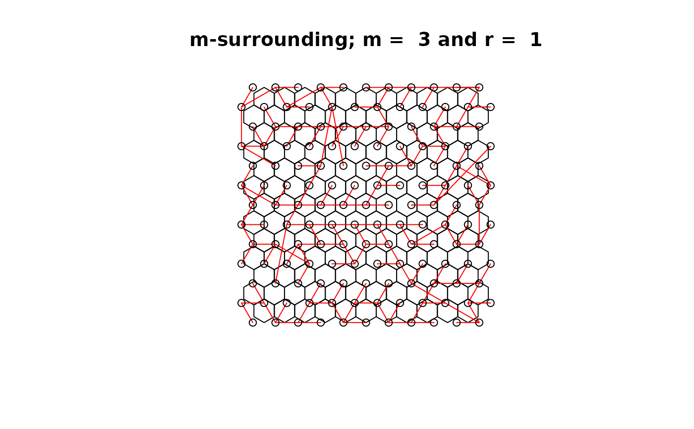
plot(msurr_polygonsf, type = 2)
#> Warning: st_centroid assumes attributes are constant over geometries of x
#> Warning: st_centroid does not give correct centroids for longitude/latitude data
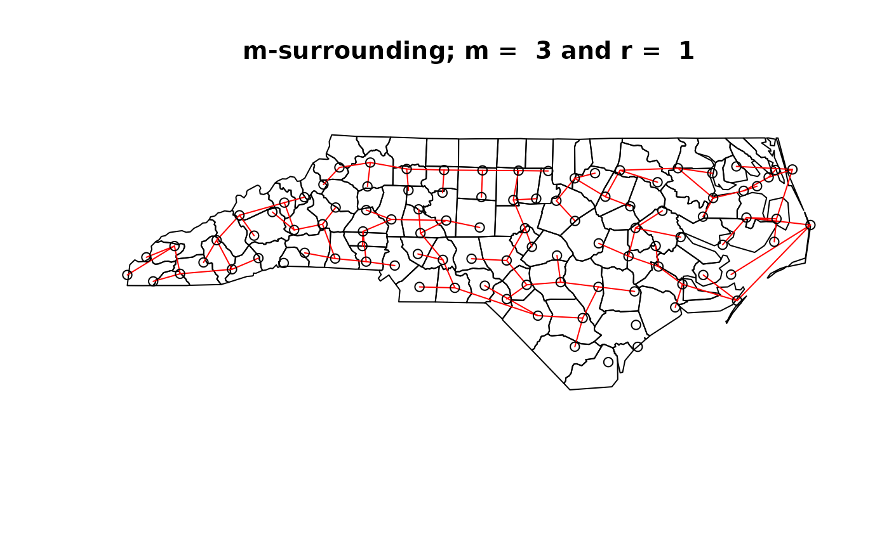
# Example 5: With regular lattice
sfc = sf::st_sfc(sf::st_polygon(list(rbind(c(0,0), c(1,0), c(1,1), c(0,1), c(0,0)))))
hexs <- sf::st_make_grid(sfc, cellsize = 0.1, square = FALSE)
hexs.sf <- sf::st_sf(hexs)
listw <- spdep::poly2nb(as(hexs.sf, "Spatial"), queen = FALSE)
m <- 3
r <- 1
msurr_polygonsf <- m.surround(x = hexs.sf, m = m, r = r)
plot(msurr_polygonsf, type = 1)
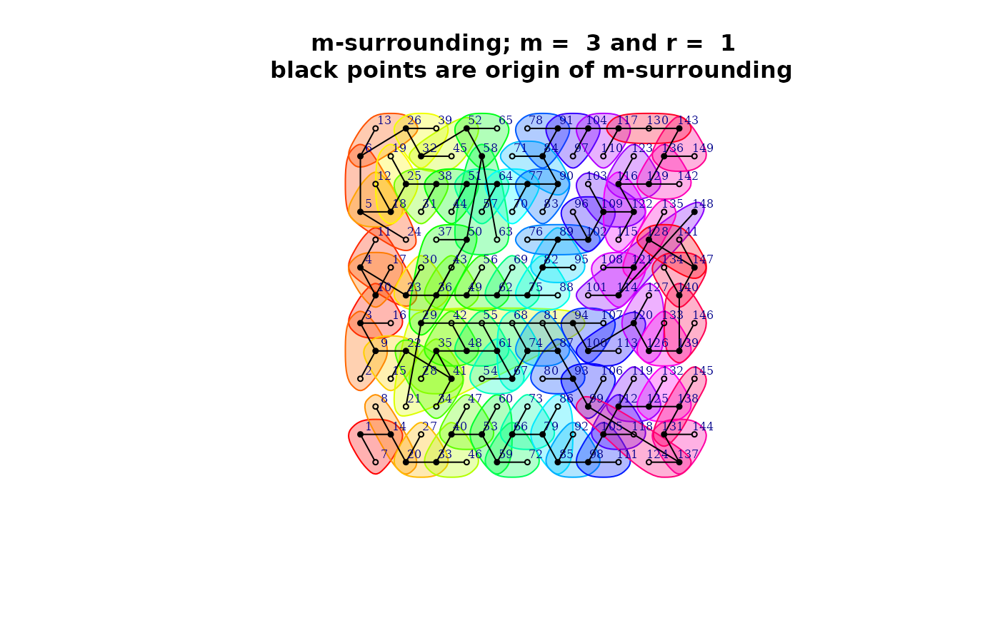
plot(msurr_polygonsf, type = 2)
m <- 3
r <- 1
msurr_polygonsf <- m.surround(x = nc, m = m, r = r,
distance = "Great Circle",
control=list(dtmaxpc = 0.20))
#>
#> Threshold distance: 150383.5
#> Number of m-surroundings excluded for exceeding
#> the threshold distance: 2
#>
#> Index of spatial observations excluded: 42 28
plot(msurr_polygonsf, type = 1)
#> Warning: st_centroid assumes attributes are constant over geometries of x
#> Warning: st_centroid does not give correct centroids for longitude/latitude data
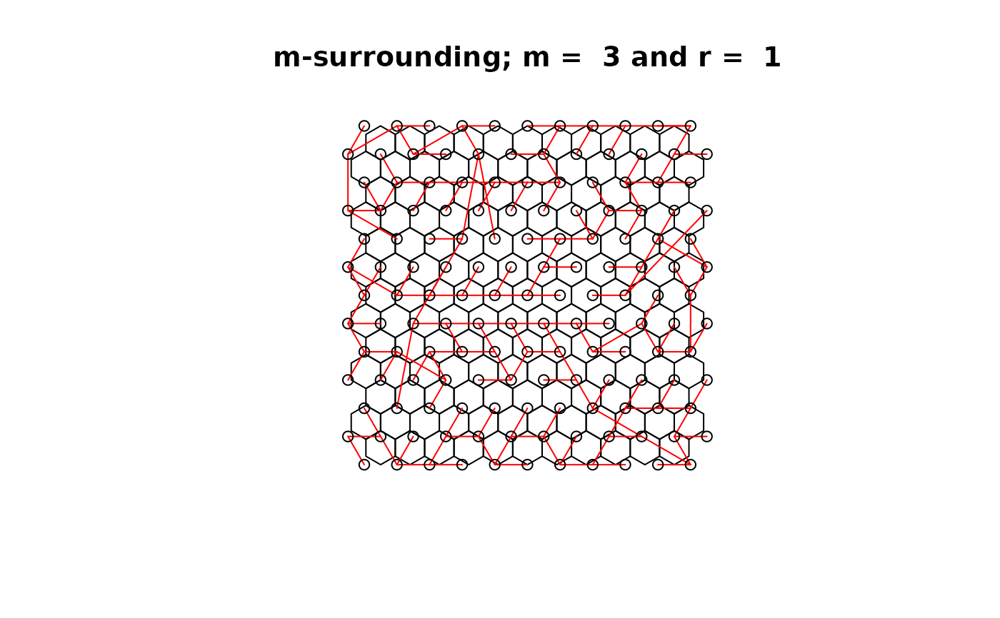
plot(msurr_polygonsf, type = 2)
#> Warning: st_centroid assumes attributes are constant over geometries of x
#> Warning: st_centroid does not give correct centroids for longitude/latitude data
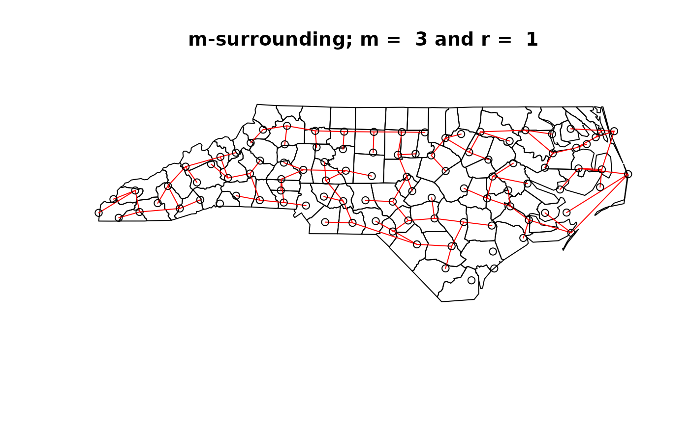
# Example 5: With regular lattice
sfc = sf::st_sfc(sf::st_polygon(list(rbind(c(0,0), c(1,0), c(1,1), c(0,1), c(0,0)))))
hexs <- sf::st_make_grid(sfc, cellsize = 0.1, square = FALSE)
hexs.sf <- sf::st_sf(hexs)
listw <- spdep::poly2nb(as(hexs.sf, "Spatial"), queen = FALSE)
m <- 3
r <- 1
msurr_polygonsf <- m.surround(x = hexs.sf, m = m, r = r)
plot(msurr_polygonsf, type = 1)
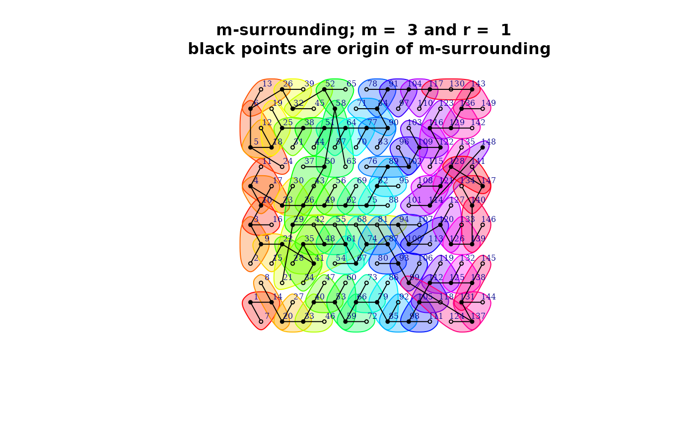
plot(msurr_polygonsf, type = 2)
 summary(msurr_polygonsf)
#>
#> Characteristics of m-surrounding:
#>
#> Number of m-surrounding (R): 74
#> Length of m-surrounding (m): 3
#> Number no-symbolized observations: 0
#>
#> List of no-symbolized observations:
#>
#>
#> List of the degree overlaping:
#> There are 2 m-surrounding that have intersection with 1 m-surrounding
#> There are 72 m-surrounding that have intersection with 2 m-surrounding
#> Mean degree of overlaping: 1.973
summary(msurr_polygonsf)
#>
#> Characteristics of m-surrounding:
#>
#> Number of m-surrounding (R): 74
#> Length of m-surrounding (m): 3
#> Number no-symbolized observations: 0
#>
#> List of no-symbolized observations:
#>
#>
#> List of the degree overlaping:
#> There are 2 m-surrounding that have intersection with 1 m-surrounding
#> There are 72 m-surrounding that have intersection with 2 m-surrounding
#> Mean degree of overlaping: 1.973